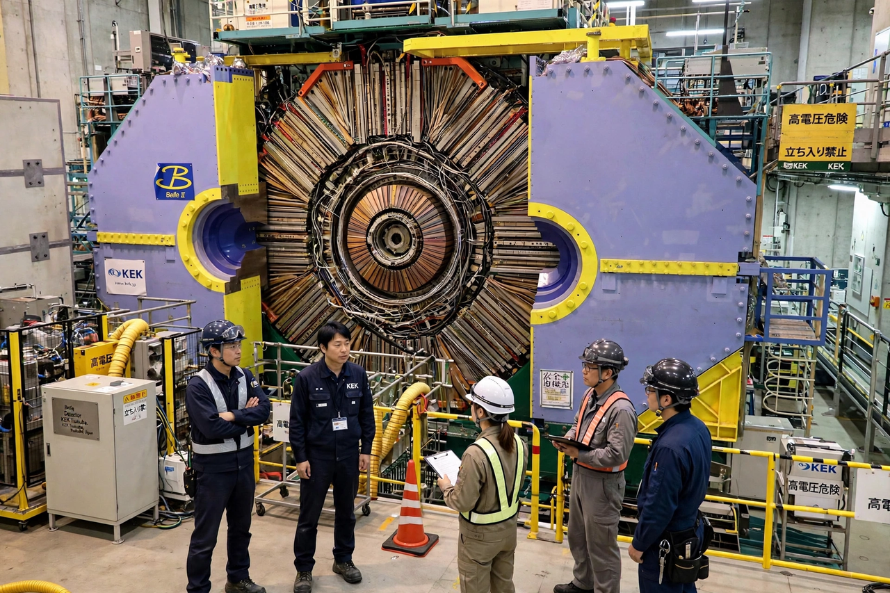

CP violation

[Image: Photograph of the Belle detector at KEK, opened to show its layered structure]CP violation is a violation of CP symmetry: the combination of charge conjugation (C, exchanging particles and antiparticles) and parity (P, mirror reflection). CP symmetry states that the laws of physics should be the same if a particle were interchanged with its antiparticle and its spatial coordinates were inverted. Its violation means nature distinguishes matter from Antimatter in a way that cannot be attributed to geometry alone.
CP violation was discovered in 1964 by James Cronin and Val Fitch in the decays of neutral kaons (Nobel Prize 1980), shocking a community that had only just absorbed parity violation (1957). In the Standard Model it arises from a complex phase in the quark mixing (CKM) matrix, as Makoto Kobayashi and Toshihide Maskawa showed in 1973 — a mechanism requiring three quark generations and confirmed precisely by the BaBar and Belle 'B factories' in 2001–2004. Because Andrei Sakharov (1967) showed CP violation is one of the necessary conditions for generating the universe's matter–antimatter asymmetry in the early universe, the hunt for further CP violation — in neutrinos (T2K hints) and in the lepton sector — is a major programme of current physics: the CKM amount is far too small to explain why matter survived annihilation.
History
Parity violation (Lee and Yang's proposal, Wu's experiment, 1956–57) fell first; physicists consoled themselves that the combined CP might be exact. Cronin and Fitch's Brookhaven experiment found that the long-lived neutral kaon occasionally decays into two pions — forbidden if CP holds — at a rate of about 2 in 1000. Decades of kaon physics and the B factories mapped the effect into the CKM matrix's unitarity triangle, one of flavour physics' triumphs.